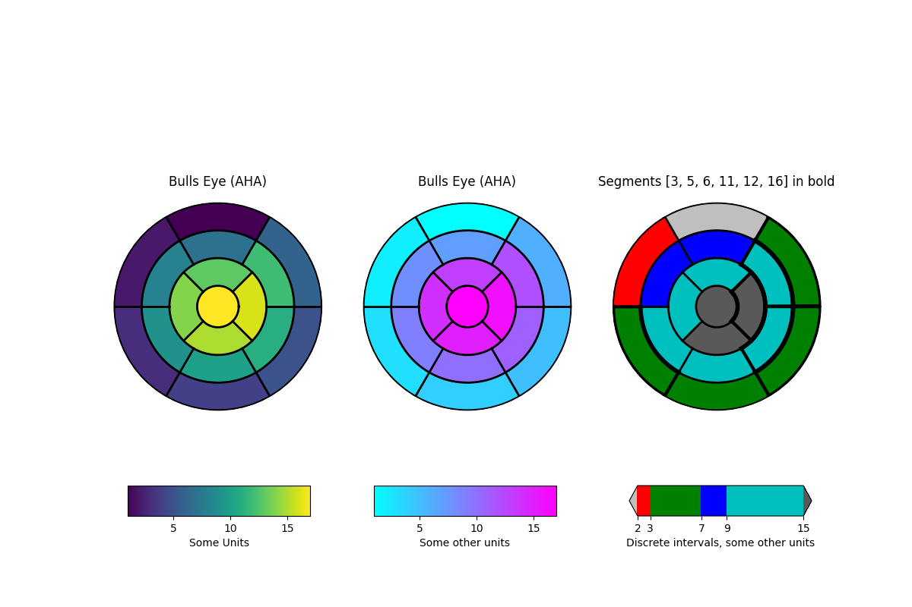

Version 3.1.1
Matplotlib is hiring a Research Software Engineering Fellow! See discourse for details. Apply by January 3, 2020
Note
Click here to download the full example code
This example demonstrates how to create the 17 segment model for the left ventricle recommended by the American Heart Association (AHA).
import numpy as np
import matplotlib as mpl
import matplotlib.pyplot as plt
def bullseye_plot(ax, data, seg_bold=None, cmap=None, norm=None):
"""
Bullseye representation for the left ventricle.
Parameters
----------
ax : axes
data : list of int and float
The intensity values for each of the 17 segments
seg_bold : list of int, optional
A list with the segments to highlight
cmap : ColorMap or None, optional
Optional argument to set the desired colormap
norm : Normalize or None, optional
Optional argument to normalize data into the [0.0, 1.0] range
Notes
-----
This function create the 17 segment model for the left ventricle according
to the American Heart Association (AHA) [1]_
References
----------
.. [1] M. D. Cerqueira, N. J. Weissman, V. Dilsizian, A. K. Jacobs,
S. Kaul, W. K. Laskey, D. J. Pennell, J. A. Rumberger, T. Ryan,
and M. S. Verani, "Standardized myocardial segmentation and
nomenclature for tomographic imaging of the heart",
Circulation, vol. 105, no. 4, pp. 539-542, 2002.
"""
if seg_bold is None:
seg_bold = []
linewidth = 2
data = np.array(data).ravel()
if cmap is None:
cmap = plt.cm.viridis
if norm is None:
norm = mpl.colors.Normalize(vmin=data.min(), vmax=data.max())
theta = np.linspace(0, 2 * np.pi, 768)
r = np.linspace(0.2, 1, 4)
# Create the bound for the segment 17
for i in range(r.shape[0]):
ax.plot(theta, np.repeat(r[i], theta.shape), '-k', lw=linewidth)
# Create the bounds for the segments 1-12
for i in range(6):
theta_i = np.deg2rad(i * 60)
ax.plot([theta_i, theta_i], [r[1], 1], '-k', lw=linewidth)
# Create the bounds for the segments 13-16
for i in range(4):
theta_i = np.deg2rad(i * 90 - 45)
ax.plot([theta_i, theta_i], [r[0], r[1]], '-k', lw=linewidth)
# Fill the segments 1-6
r0 = r[2:4]
r0 = np.repeat(r0[:, np.newaxis], 128, axis=1).T
for i in range(6):
# First segment start at 60 degrees
theta0 = theta[i * 128:i * 128 + 128] + np.deg2rad(60)
theta0 = np.repeat(theta0[:, np.newaxis], 2, axis=1)
z = np.ones((128, 2)) * data[i]
ax.pcolormesh(theta0, r0, z, cmap=cmap, norm=norm)
if i + 1 in seg_bold:
ax.plot(theta0, r0, '-k', lw=linewidth + 2)
ax.plot(theta0[0], [r[2], r[3]], '-k', lw=linewidth + 1)
ax.plot(theta0[-1], [r[2], r[3]], '-k', lw=linewidth + 1)
# Fill the segments 7-12
r0 = r[1:3]
r0 = np.repeat(r0[:, np.newaxis], 128, axis=1).T
for i in range(6):
# First segment start at 60 degrees
theta0 = theta[i * 128:i * 128 + 128] + np.deg2rad(60)
theta0 = np.repeat(theta0[:, np.newaxis], 2, axis=1)
z = np.ones((128, 2)) * data[i + 6]
ax.pcolormesh(theta0, r0, z, cmap=cmap, norm=norm)
if i + 7 in seg_bold:
ax.plot(theta0, r0, '-k', lw=linewidth + 2)
ax.plot(theta0[0], [r[1], r[2]], '-k', lw=linewidth + 1)
ax.plot(theta0[-1], [r[1], r[2]], '-k', lw=linewidth + 1)
# Fill the segments 13-16
r0 = r[0:2]
r0 = np.repeat(r0[:, np.newaxis], 192, axis=1).T
for i in range(4):
# First segment start at 45 degrees
theta0 = theta[i * 192:i * 192 + 192] + np.deg2rad(45)
theta0 = np.repeat(theta0[:, np.newaxis], 2, axis=1)
z = np.ones((192, 2)) * data[i + 12]
ax.pcolormesh(theta0, r0, z, cmap=cmap, norm=norm)
if i + 13 in seg_bold:
ax.plot(theta0, r0, '-k', lw=linewidth + 2)
ax.plot(theta0[0], [r[0], r[1]], '-k', lw=linewidth + 1)
ax.plot(theta0[-1], [r[0], r[1]], '-k', lw=linewidth + 1)
# Fill the segments 17
if data.size == 17:
r0 = np.array([0, r[0]])
r0 = np.repeat(r0[:, np.newaxis], theta.size, axis=1).T
theta0 = np.repeat(theta[:, np.newaxis], 2, axis=1)
z = np.ones((theta.size, 2)) * data[16]
ax.pcolormesh(theta0, r0, z, cmap=cmap, norm=norm)
if 17 in seg_bold:
ax.plot(theta0, r0, '-k', lw=linewidth + 2)
ax.set_ylim([0, 1])
ax.set_yticklabels([])
ax.set_xticklabels([])
# Create the fake data
data = np.array(range(17)) + 1
# Make a figure and axes with dimensions as desired.
fig, ax = plt.subplots(figsize=(12, 8), nrows=1, ncols=3,
subplot_kw=dict(projection='polar'))
fig.canvas.set_window_title('Left Ventricle Bulls Eyes (AHA)')
# Create the axis for the colorbars
axl = fig.add_axes([0.14, 0.15, 0.2, 0.05])
axl2 = fig.add_axes([0.41, 0.15, 0.2, 0.05])
axl3 = fig.add_axes([0.69, 0.15, 0.2, 0.05])
# Set the colormap and norm to correspond to the data for which
# the colorbar will be used.
cmap = mpl.cm.viridis
norm = mpl.colors.Normalize(vmin=1, vmax=17)
# ColorbarBase derives from ScalarMappable and puts a colorbar
# in a specified axes, so it has everything needed for a
# standalone colorbar. There are many more kwargs, but the
# following gives a basic continuous colorbar with ticks
# and labels.
cb1 = mpl.colorbar.ColorbarBase(axl, cmap=cmap, norm=norm,
orientation='horizontal')
cb1.set_label('Some Units')
# Set the colormap and norm to correspond to the data for which
# the colorbar will be used.
cmap2 = mpl.cm.cool
norm2 = mpl.colors.Normalize(vmin=1, vmax=17)
# ColorbarBase derives from ScalarMappable and puts a colorbar
# in a specified axes, so it has everything needed for a
# standalone colorbar. There are many more kwargs, but the
# following gives a basic continuous colorbar with ticks
# and labels.
cb2 = mpl.colorbar.ColorbarBase(axl2, cmap=cmap2, norm=norm2,
orientation='horizontal')
cb2.set_label('Some other units')
# The second example illustrates the use of a ListedColormap, a
# BoundaryNorm, and extended ends to show the "over" and "under"
# value colors.
cmap3 = mpl.colors.ListedColormap(['r', 'g', 'b', 'c'])
cmap3.set_over('0.35')
cmap3.set_under('0.75')
# If a ListedColormap is used, the length of the bounds array must be
# one greater than the length of the color list. The bounds must be
# monotonically increasing.
bounds = [2, 3, 7, 9, 15]
norm3 = mpl.colors.BoundaryNorm(bounds, cmap3.N)
cb3 = mpl.colorbar.ColorbarBase(axl3, cmap=cmap3, norm=norm3,
# to use 'extend', you must
# specify two extra boundaries:
boundaries=[0] + bounds + [18],
extend='both',
ticks=bounds, # optional
spacing='proportional',
orientation='horizontal')
cb3.set_label('Discrete intervals, some other units')
# Create the 17 segment model
bullseye_plot(ax[0], data, cmap=cmap, norm=norm)
ax[0].set_title('Bulls Eye (AHA)')
bullseye_plot(ax[1], data, cmap=cmap2, norm=norm2)
ax[1].set_title('Bulls Eye (AHA)')
bullseye_plot(ax[2], data, seg_bold=[3, 5, 6, 11, 12, 16],
cmap=cmap3, norm=norm3)
ax[2].set_title('Segments [3,5,6,11,12,16] in bold')
plt.show()
Keywords: matplotlib code example, codex, python plot, pyplot Gallery generated by Sphinx-Gallery